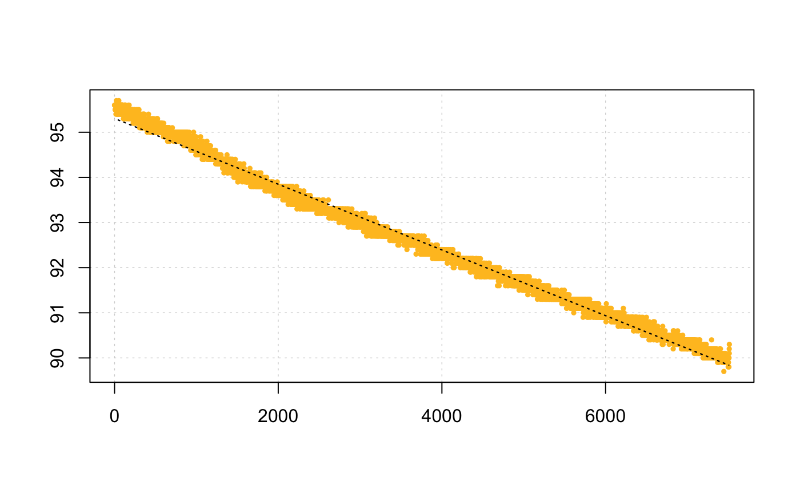

This is a conversion function that performs basic conversions between units
of dissolved oxygen in aquatic respirometry. Some units require temperature
(t), salinity (S), and atmospheric pressure (P) to be specified. See
unit_args() for details. For freshwater experiments, salinity should be set
to zero (i.e. S = 0).
convert_DO(x, from = NULL, to = NULL, S = NULL, t = NULL, P = 1.013253)
| x | numeric vector or object of class |
|---|---|
| from | string. The unit to convert from. See |
| to | string. The unit to convert to. See |
| S | numeric. Salinity (ppt). Defaults to NULL. Used only in conversion
of some units. See |
| t | numeric. Temperature(°C). Defaults to NULL. Used only in conversion
of some units. See |
| P | numeric. Pressure (bar). Defaults to 1.013253. Used only in
conversion of some units. See |
A list.
convert_DO(x, from = "percent", to = "mg L-1", t = 15, S = 35)#> [1] -5.914509e-05 #> #> Input unit: percent #> Output unit: mg L-1# Or, perform on a numeric convert_DO(100, from = "percent", to = "mg L-1", S = 33, t = 18)#> [1] 7.752073 #> #> Input unit: percent #> Output unit: mg L-1convert_DO(sardine.rd[[2]], from = "percent", to = "torr", t = 15, S = 35)#> #>#> Showing only the first 20 conversions: #> [1] 151.6918 151.6918 151.6918 151.6918 151.6918 151.6918 151.6918 151.5331 #> [9] 151.5331 151.5331 151.6918 151.6918 151.5331 151.5331 151.6918 151.6918 #> [17] 151.6918 151.3744 151.6918 151.6918 #> #> Input unit: percent #> Output unit: torr